鸟欲高飞先振翅，人求上进先读书。
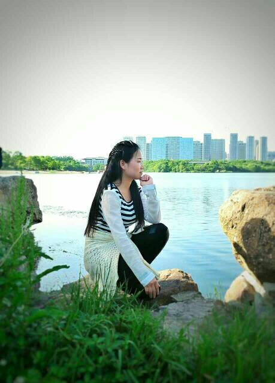
再长的路，一步步也能走完，再短的路，不迈开双脚也无法到达。
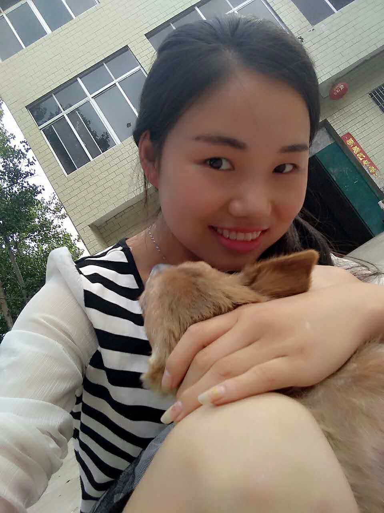
爱情无需刻意去把握，越是想抓牢自己的爱情，反而越容易失去自我，失去原则，失去彼此之间应该保持的宽容和谅解。
爱情是最美好的梦，壮丽着每个人的人生。无论你是青年还是老年，无论你是离异还是独身都不要打破自己的爱情梦。让心中的太阳温暖生命，你就会永远年轻。
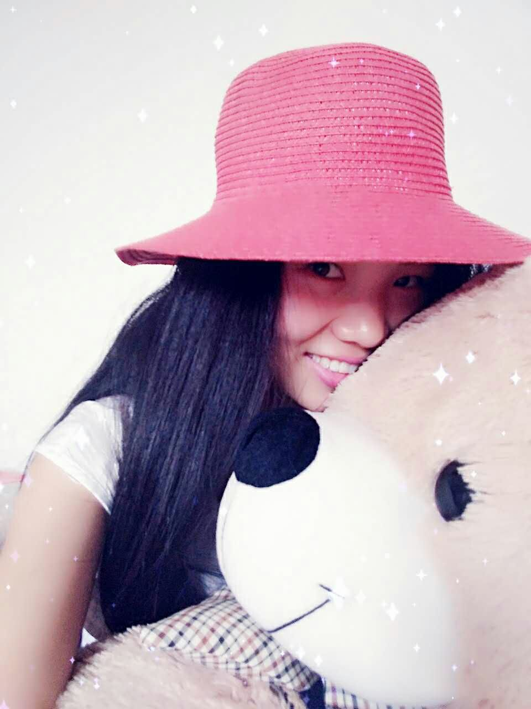
不要因为寂寞去恋爱，时间是个魔鬼，天长日久，如果你是个多情的人，即使不爱对方，到时候也会产生感情，到最后你怎么办？
生活其实真的很平凡，任何人都不能得到所要的全部，有得必有失，只是在得失的选择中，拥有你自己最珍贵的东西。
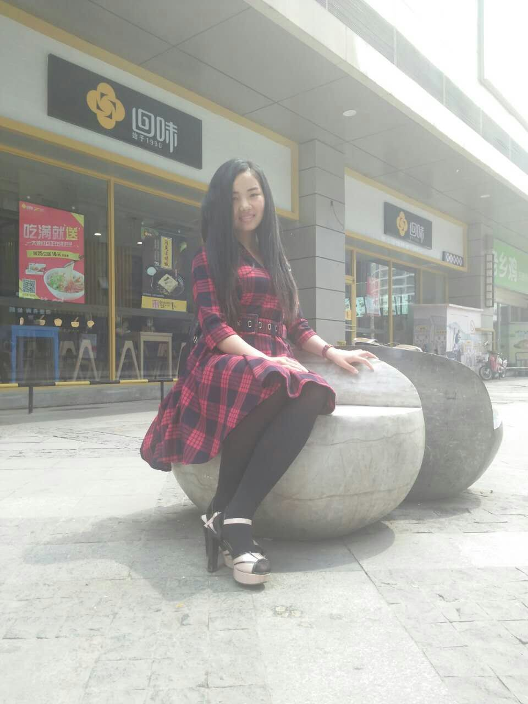
别问我们是否还是朋友，那些美好或伤心的过往，在分手一刻就碎了一地，拼不回昨天，也撑不起友情的明天；别再试探你在我心中的位置，你见过我爱得最傻的模样的，是怎样不留后路，破釜沉舟；别祝我幸福，这个世界上最没资格说这句话的人就是你。记住，你一定要幸福，否则辜负了我的退出。
生活是一面镜子。你对它笑，它就对你笑；你对它哭，它也对你哭。
人生是个圆，有的人走了一辈子也没有走出命运画出的圆圈，其实，圆上的每一个点都有一条腾飞的切线。
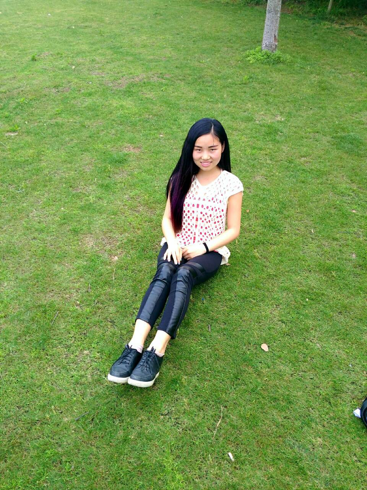
命运掌握在自己手中。要么你驾驭生命，要么生命驾驭你，你的心态决定你是坐骑还是骑手。
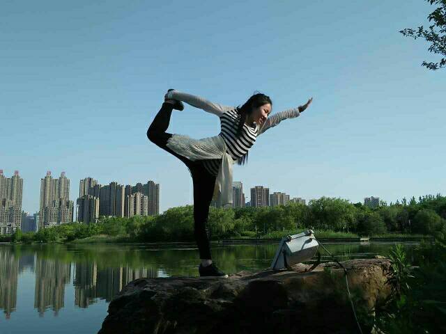
人一生下就会哭，笑是后来才学会的。所以忧伤是一种低级的本能，而快乐是一种更高级的能力。
庆历四年春，滕子京谪守巴陵郡。越明年，政通人和，百废具兴。乃重修岳阳楼，增其旧制，刻唐贤今人诗赋于其上。属予作文以记之。(具 通：俱)
予观夫巴陵胜状，在洞庭一湖。衔远山，吞长江，浩浩汤汤，横无际涯；朝晖夕阴，气象万千。此则岳阳楼之大观也，前人之述备矣。然则北通巫峡，南极潇湘，迁客骚人，多会于此，览物之情，得无异乎?
若夫霪雨霏霏，连月不开，阴风怒号，浊浪排空；日星隐曜，山岳潜形；商旅不行，樯倾楫摧；薄暮冥冥，虎啸猿啼。登斯楼也，则有去国怀乡，忧谗畏讥，满目萧然，感极而悲者矣。(隐曜 一作：隐耀；霪雨 通：淫雨)
至若春和景明，波澜不惊，上下天光，一碧万顷；沙鸥翔集，锦鳞游泳；岸芷汀兰，郁郁青青。而或长烟一空，皓月千里，浮光跃金，静影沉璧，渔歌互答，此乐何极！登斯楼也，则有心旷神怡，宠辱偕忘，把酒临风，其喜洋洋者矣。
嗟夫！予尝求古仁人之心，或异二者之为，何哉？不以物喜，不以己悲；居庙堂之高则忧其民；处江湖之远则忧其君。是进亦忧，退亦忧。然则何时而乐耶？其必曰：“先天下之忧而忧，后天下之乐而乐”乎。噫！微斯人，吾谁与归？
时六年九月十五日。
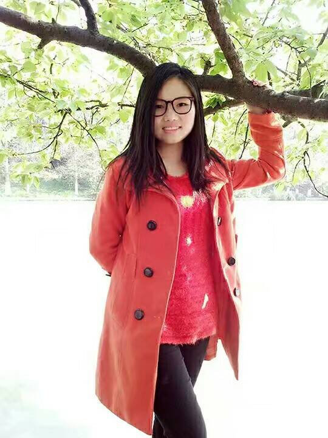
明月几时有？把酒问青天。不知天上宫阙，今夕是何年。我欲乘风归去，又恐琼楼玉宇，高处不胜寒。起舞弄清影，何似在人间？(何似 一作：何时；又恐 一作：惟 / 唯恐)
转朱阁，低绮户，照无眠。不应有恨，何事长向别时圆？人有悲欢离合，月有阴晴圆缺，此事古难全。但愿人长久，千里共婵娟。(长向 一作：偏向)
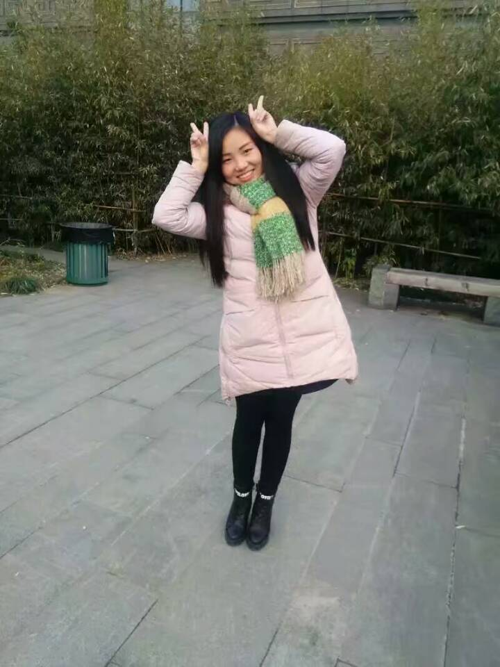
君不见，黄河之水天上来，奔流到海不复回。
君不见，高堂明镜悲白发，朝如青丝暮成雪。
人生得意须尽欢，莫使金樽空对月。
天生我材必有用，千金散尽还复来。
烹羊宰牛且为乐，会须一饮三百杯。
岑夫子，丹丘生，将进酒，杯莫停。
与君歌一曲，请君为我倾耳听。(倾耳听 一作：侧耳听)
钟鼓馔玉不足贵，但愿长醉不复醒。(不足贵 一作：何足贵；不复醒 一作：不愿醒/不用醒)
古来圣贤皆寂寞，惟有饮者留其名。(古来 一作：自古；惟 通：唯)
陈王昔时宴平乐，斗酒十千恣欢谑。
主人何为言少钱，径须沽取对君酌。
五花马，千金裘，呼儿将出换美酒，与尔同销万古愁。
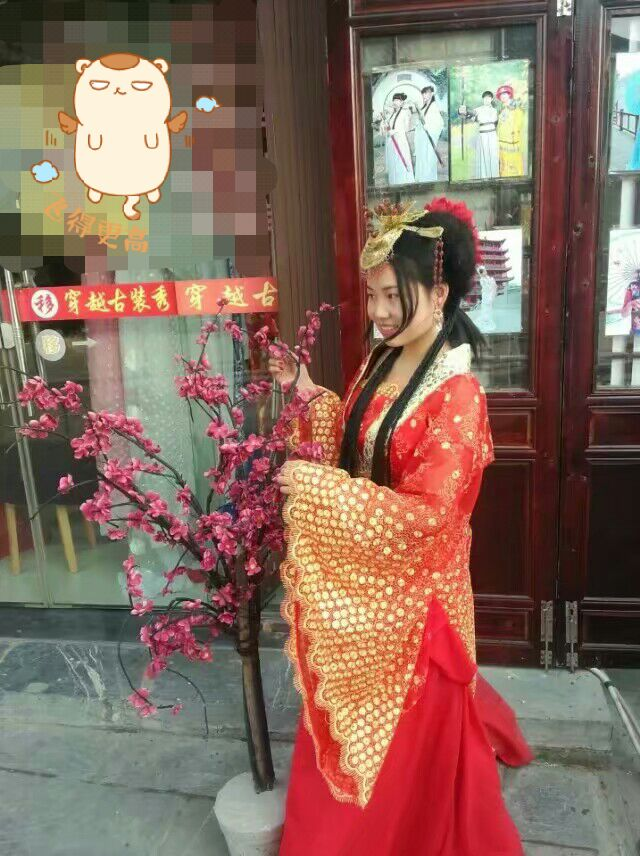
山不在高，有仙则名。水不在深，有龙则灵。斯是陋室，惟吾德馨。苔痕上阶绿，草色入帘青。谈笑有鸿儒，往来无白丁。可以调素琴，阅金经。无丝竹之乱耳，无案牍之劳形。南阳诸葛庐，西蜀子云亭。孔子云：何陋之有？
水陆草木之花，可爱者甚蕃。晋陶渊明独爱菊。自李唐来，世人甚爱牡丹。予独爱莲之出淤泥而不染，濯清涟而不妖，中通外直，不蔓不枝，香远益清，亭亭净植，可远观而不可亵玩焉。(甚爱 一作：盛爱)
予谓菊，花之隐逸者也；牡丹，花之富贵者也；莲，花之君子者也。噫！菊之爱，陶后鲜有闻。莲之爱，同予者何人?牡丹之爱，宜乎众矣!
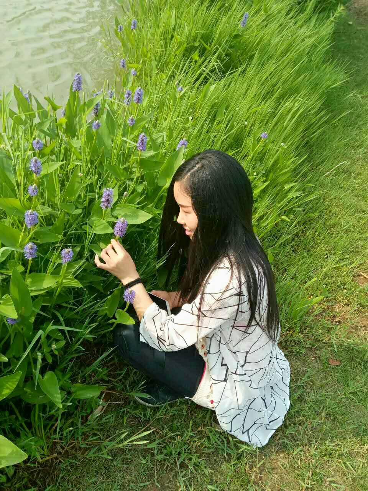
寻寻觅觅，冷冷清清，凄凄惨惨戚戚⑵。乍暖还寒时候⑶，最难将息⑷。三杯两盏淡酒，怎敌他、晚来风急⑸？雁过也，正伤心，却是旧时相识。
满地黄花堆积。憔悴损⑹，如今有谁堪摘⑺？守着窗儿⑻，独自怎生得黑⑼？梧桐更兼细雨⑽，到黄昏、点点滴滴。这次第⑾，怎一个愁字了得!
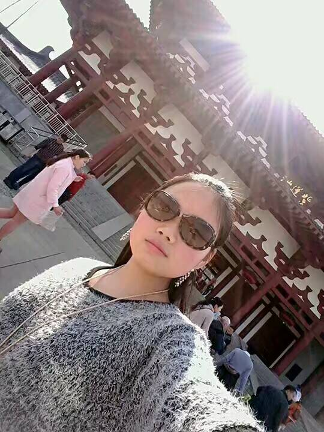
祝你每天都开心快乐！———— 芜芯
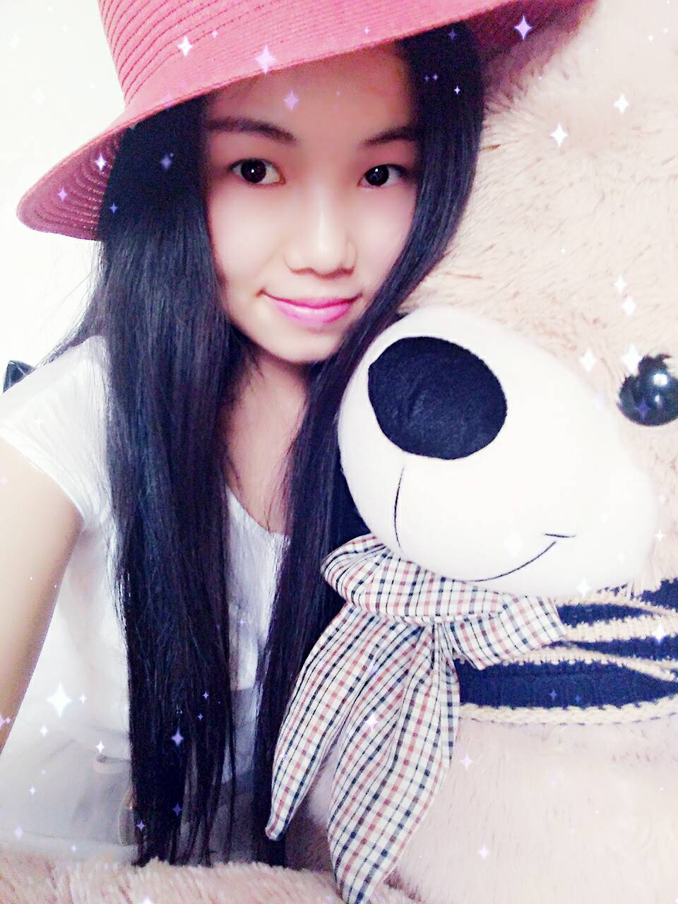